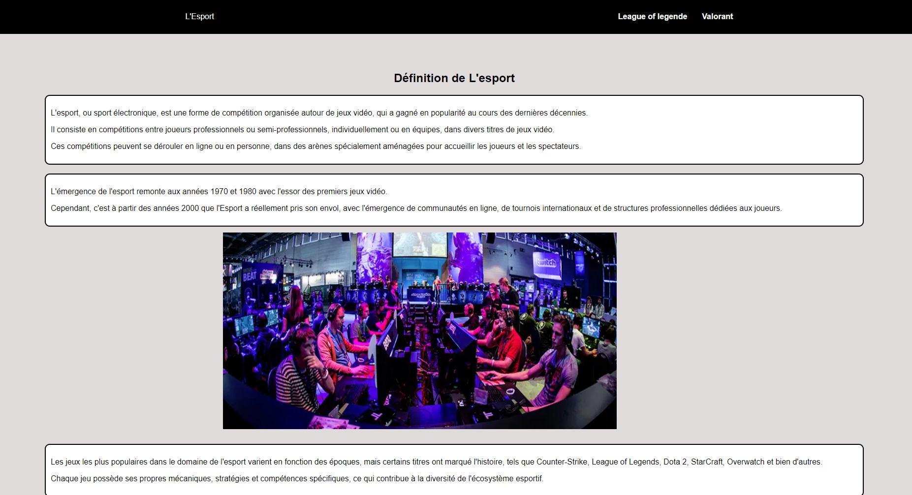
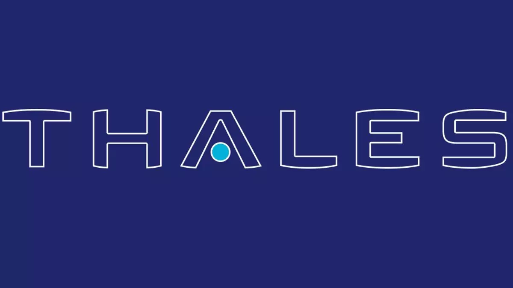
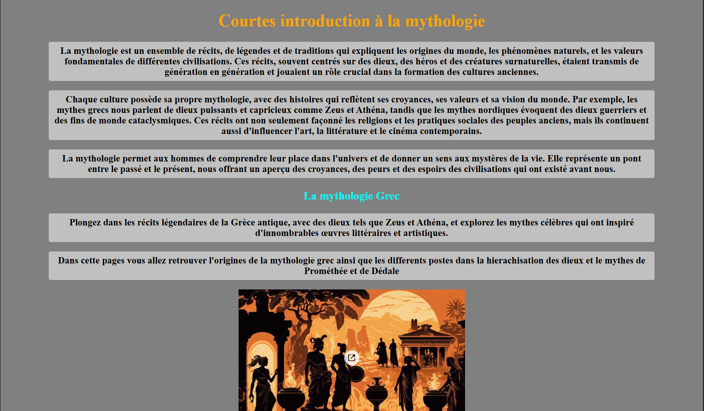
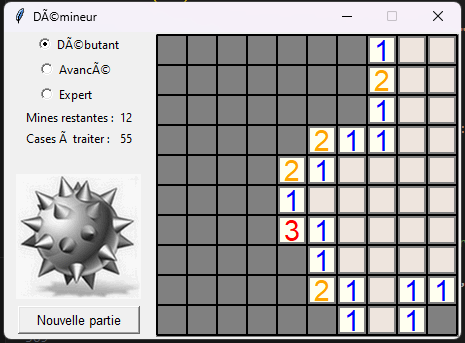

SAÉ en cours : Développement d'un site web applicatif permettant de réaliser des audits de sécurité pour les administrateurs.
Conception Full-Stack intégrant les meilleures pratiques de développement sécurisé et l'hébergement d'infrastructures cloud/conteneurs (ex: Docker).
Site en constante évolution. Les visuels finaux et les démonstrations vidéo seront fournis ultérieurement.

Projet de 2ème année : Développement d'une application Android connectée (Vuln_Guard) reliée à un écosystème Web centralisé.
Création d'une infrastructure applicative complète (Client, Interface Admin, Backend, BDD).
Compétences full-stack mobilisées :
Écosystème fonctionnel permettant l'échange et la gestion de données en temps réel depuis des terminaux nomades.
Projet Thalès d'envergure : Développer une solution complète de pilotage d'objets connectés (IoT) via une interface web sécurisée.
Implémentation de l'architecture serveur-microcontrôleur en assurant un contrôle strict des accès.
Livrable technique complet validant le contrôle d'équipements distants en environnement sécurisé.


Projet de 1ère année en binôme : Création d'un site vitrine thématique (la mythologie).
Conception, maquettage et développement front-end d'un site statique multi-pages.
Compétences mobilisées :
Site web responsive validant les acquis de base en développement UI.
Projet initial de 1ère année : Conception d'un site web vitrine dédié à ma passion pour l'e-sport (réalisé en binôme).
Création d'une identité visuelle et intégration des premières pages informatives.
Compétences mobilisées :
Premier projet web personnel finalisé et déployable.

Projet personnel : Développement d'un clone du Démineur par passion pour la programmation.
Conception du moteur logique en s'appuyant sur les concepts de la Programmation Orientée Objet (POO) en Python.
Jeu fonctionnel et assimilation renforcée des logiques algorithmiques.
Projet personnel avancé : Modélisation et conception d'un jeu d'échecs complet.
Implémentation approfondie des règles du jeu via Python (POO et algorithmique) puis adaptation en interface jouable (HTML, CSS, JavaScript Vanilla).
Version web finalisée et déployée, illustrant ma capacité à concevoir une logique métier complexe.